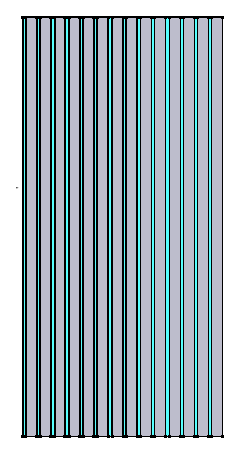

Example Input File
The input file example documented here is taken from
moltres/tests/twod_axi_coupled/auto_diff_rho.i.
This is a simple 2-D axisymmetric core model of the Molten Salt Reactor Experiment (MSRE)
that was developed at Oak Ridge National Laboratory and was operated from 1965
through 1969. Simulation results from this 2-D model are documented in the
article, Introduction to Moltres: An application for simulation of Molten Salt
Reactors,
which discusses simulation results, and compares them to a 3-D Motlres model of
the MSRE and to MSRE data and calculated results. It should be noted that
Figure 1 of the article indicates that the width of the model is 145 cm. This
however, is the diameter of the entire core. A careful reader would notice that
the width of the plots in the article is 1/2 this width, and the width indicated
in Figure 1 is not representative of the model.
Assuming that Moltres has been successfully compiled, to execute this input file
from the command line, run the following from a terminal window, substituting
$moltres_root with the path to the Moltres root directory:
cd $moltres_root/tests/twod_axi_coupled
../../moltres-opt -i auto_diff_rho.i
In serial, this job takes around 90 seconds on a 2.7 GHz machine. To run the job in parallel, execute:
mpirun -np 2 ../../moltres-opt -i auto_diff_rho.i
where the number of processors can be changed from 2 to however many processes
you want to run. The parallel performance of the job depends on the number of
degrees of freedom in the problem and the preconditioner used. A general rule of
thumb for optimal scaling is not to go below 20k degrees of freedom per
processor, otherwise communication becomes a performance drag. Additionally many
preconditioners do not perform as well when spread over multiple processes as
they lose access to “new” information. (See
http://www.mcs.anl.gov/petsc/documentation/faq.html#slowerparallel for more
discussion of this). This particular input file (auto_diff_rho.i) only has
8,697 degrees of freedom so communication is a factor; however, the executioner
used is a direct solver which scales well. On the same 2.7 GHz machine, the
solution times for 1-4 processors are given below.
- Single processor solution time: 90 seconds
- Two processors: 50 seconds
- Three: 35 seconds
- Four: 30 seconds
Before delving into a description of the input file, we note that all the
parameter options for different input blocks can be seen by executing
moltres-opt --dump.
Example output corresponding to the input file under discussion can be found in
$moltres_root/tests/twod_axi_coupled/gold/auto_diff_rho.e. The most common
application for visualizing output files is
ParaView, although
VisIt or
yt may also be used.
Model Geometry
The figure below shows the domain for the 2-D MSRE model. It is a 72.5 cm by 151.75 cm rectangle that is slightly smaller than the total height of the core, and includes 1/2 the width of the core, extending from the core center line on the left to the core wall on the right. For this steady-state simulation, the core center line is a symmetry boundary. The domain consists of 14 fuel channels, alternating with 14 solid graphite moderator regions, represented in the figure by cyan and grey rectangles respectively.

File Format
Moltres is built on top of the MOOSE framework, and the input file uses the “hierarchal
input text format” (hit) input format adopted by MOOSE. A brief description of the
input syntax is presented here.
This is a relatively simple file format that uses [names in brackets] to mark the
start and end of input blocks. The format is loosely based on a directory structure
with nesting of blocks allowed and [../] being used to indicate the end of a
block (i.e., going up one level). Empty brackets [] can also be used to indicate
the end of a block. Note that block names and parameter names are generally case
sensitive in the input file. In addition, in Moltres/MOOSE input files, the #
symbol is used to mark the start of a comment. Comments may start anywhere on a line.
Substitution Variables
Root level variables can be used as substitution variables throughout the document
by using the syntax ${varname}. Starting at the top of the input file, the
following substitution variables are defined:
flow_velocity=21.7 # cm/s. See MSRE-properties.ods
ini_temp=922
diri_temp=922
nt_scale=1e13
flow_velocityis used to set the upward flow velocity of the fuel / molton salt in this model.ini_tempis used below to set the initial temperature in the fuel and moderator.diri_tempis used to control the inlet temperature boundary condition.nt_scaleis a transient fission heat source term scaling factor.
These variables may be modified to affect our primary system variables:
temperature, neutron flux, and precursor concentrations. Decreasing the flow velocity
will increase the temperature through the reactor. Because of the negative
feedback coefficients of fuel and moderator for this reactor composition (modeled
after Oak Ridge’s MSRE), the increase in average reactor temperature decreases the
total reactor power and consequently the neutron fluxes and precursor
concentrations. Similarly, increasing the inlet temperature via diri_temp
decreases reactor power.
GlobalParams Block
Following the substitution variable definitions, we have the GlobalParams block:
[GlobalParams]
num_groups = 2
num_precursor_groups = 6
use_exp_form = false
group_fluxes = 'group1 group2'
temperature = temp
sss2_input = false
pre_concs = 'pre1 pre2 pre3 pre4 pre5 pre6'
account_delayed = true
[]
In GlobalParams, parameters like num_groups can be globally set to a
value. Consequently any class (e.g. the kernel class GroupDiffusion) that has
the parameter num_groups will read in a value of 2 unless it is overridden
locally in its input block. It should be noted that the GlobalParams
block and any other MOOSE input block can be placed anywhere in the input file.
At execution time each block will be read when it is needed. Below is a description
of the parameters included in the GlobalParams section:
num_groups: The number of energy groups for neutron diffusionnum_precursor_groups: The number of delayed neutron precursor groupsuse_exp_form: Whether the actual neutron/precursor fluxes/concentrations should be represented by or where is the actual variable valuegroup_fluxes: The names of the neutron group fluxestemperature: The name of the temperature variable. Some of the kernel or boundary condition variables require an input namedtemperaturewhich specifies the variable used to represent temperature. The variabletempwill be specified below in the[Variables]block.sss2_input: True if the macroscopic group constants were generated by Serpent 2. False otherwisepre_concs: The names of the precursor concentration variablesaccount_delayed: Whether to account for delayed neutron production. Modifies the neutron source term
Variables Block
The Variables block is used to indicate the primary solution variables, or
equivalently, to indicate the number of partial differential equations (PDEs)
that will be defined in the Kernels and BCs blocks. For this
model, the group1 and group2 neutron fluxes and the fuel and moderator
temp (temperature) are the system variables that are being solved for by the
PDEs. In the Kernels and BCs blocks described below, each
kernel and BC term must be associated with one primary variable from the
Variables list below to indicate which PDE the term is included in.
[Variables]
[./group1]
order = FIRST
family = LAGRANGE
initial_condition = 1
scaling = 1e4
[../]
[./group2]
order = FIRST
family = LAGRANGE
initial_condition = 1
scaling = 1e4
[../]
[./temp]
initial_condition = ${ini_temp}
scaling = 1e-4
[../]
[]
Sub-blocks are initialized with [./<object_name>] and closed with [../]. The
[./group1] sub-block creates a MooseVariable object with the name group1.
The parameters purpose of the parameter is as follows:
familydescribes the shape function type used to form the approximate finite element solution.orderdenotes the polynomial order of the shape functions.initial_conditionis an optional parameter that can be used to set a spatially uniform initial value for the variable.scalingis another optional parameter that can be used to scale the residual of the corresponding variable; this is usually done when different variables have residuals of different orders of magnitude.
Mesh Block
Next in our input file we have the Mesh block. The two most commonly used Mesh
types are FileMesh and GeneratedMesh. The Mesh input block by default assumes
type FileMesh and takes a parameter argument file = <mesh_file_name>.
[Mesh]
file = '2-D_lattice_structured.msh'
[]
Many MOOSE users generate their meshes using
Cubit/Trelis. For national lab employees this software is free; however,
academic or industry users must pay. Consequently, Moltres meshes to date have
been generated using the software gmsh which is free and
open source. Binaries for Windows, Mac, and Linux as well as source code can be
downloaded here. Ubuntu users may also install
gmsh using sudo apt-get install gmsh. We will not go into the details of
using gmsh but the interested user should peruse its
documentation. There are many example
gmsh input files in the Moltres repository (denoted by the .geo
extension). To generate a mesh for use with Moltres, a typical bash command is
gmsh -2 -o file_name.msh file_name.geo where 2 should be replaced with the
dimension of the mesh, the argument following -o is the name of the output
.msh file, and the last argument is the input .geo file.
Gmsh or Cubit can be used for generation of highly complex mesh
structures. However, if the user just wishes to generate a simple mesh, he/she
may use MOOSE’s built-in type GeneratedMesh. For using GeneratedMesh we
refer the reader here.
Problem Block
Next in our example input file, we have the Problem block. The Problem block
may usually be omitted from the input file for a Cartesian simulation. However,
since this particular example is using 2D-axisymmetric coordinates, we have to
convey this information using Problem’s coord_type parameter.
[Problem]
coord_type = RZ
[]
Precursors Block
Whereas all the other blocks that have been introduced are standard MOOSE
blocks, Precursors is a custom input file block unique to Moltres. The
Precursors action sets up the delayed neutron precursor concentration equations:
The precursor variables, kernels, and boundary conditions necessary for solving
the precursor governing equations are all instantiated by the Precursors action.
Six precursor groups (symbolized by the index i in the equation above)
are modeled, as specified via the num_precursor_groups in the
GlobalParams block. is the number of neutron flux energy
groups, and is the index associated with the energy groups. For this problem
two energy groups are modeled, with the equations configured explicitly in the
Kernels and BCs blocks documented after this section.
[Precursors]
[./pres]
var_name_base = pre
block = 'fuel'
outlet_boundaries = 'fuel_tops'
u_def = 0
v_def = ${flow_velocity}
w_def = 0
nt_exp_form = false
family = MONOMIAL
order = CONSTANT
# jac_test = true
[../]
[]
Parameter descriptions:
var_name_base: The prefix for the precursor variable names. Name suffixes are numbers, e.g.pre1, pre2, ...block: This is a parameter ubiquitous to many MOOSE classes such as kernels and materials. By specifying a value forblockthe user is asking that in this case, precursors and their associated governing equations only be solved for in thefuelmesh subdomainsoutlet_boundaries: The mesh boundaries from which the precursors flow outu_def, v_def, w_def: The x, y, and z components of velocity, or in the case of an RZ simulation,u_defis the r velocity component,v_defis the z-component, andw_defhas no meaningnt_exp_form: Whether the neutron group fluxes have their concentrations in an exponential form. Ifuse_exp_formis false in theGlobalParamsblock, this should also be falsejac_test: true if testing the application developer’s jacobian against a jacobian formed through finite differencing of the residuals. Defaults to false.
Kernels Block
The Kernels block is used to construct PDEs that are included in the system of
equations that are solved. Each PDE has a primary variable that is being solved for,
and the list of variables being solved for is defined in the Variables
block shown above. There is an additional PDE solved as part of the system of
PDEs for each variable defined in the Variables section. In this case, three
solution variables were defined in the variable section:
- The
group1fast group neutron flux. - The
group2thermal group neutron flux. - The molten salt / moderator temperature (
temp).
Note that additional precursor variables are automatically defined by the
Precursors block.
The Kernels section defines a set of “Kernels”, where a “Kernel” represents a
single term included in a PDE. A PDE is constructed by specifying the set of terms
(or Kernels) that will be included in the PDE in the Kernels block, and by
specifying which PDE the kernel is associated with. This is done by indicating
which of the above three variables the kernel is associated with (i.e., group1,
group2, or temp).
Thus each entry in the Kernels block specifies a term to include in one of
PDEs that are solved. The type = <kernel type> parameter associated with a
kernel entry identifies the term (or Kernel) that will be included in the PDE,
and the variable = <primary variable> value indicates the primary solution
variable (from the Variables block) associated with the term, or
equivalently which PDE the term will be included in. MOOSE provides several
standard kernels that can be included in a PDE. Moltres defines an additional set
of kernels that are useful in modeling neutron flux and associated phenomenon in
molton salt reactors. The mathematical form of the Moltres kernels can be found
on the kernel wiki page.
Kernels can be optionally restricted to specific subdomains within the model by setting
block = <subdomain_names>. Note that this implies that the form of the equation
that is solved may differ in different mesh regions. The equations that are modeled
are represented below, followed by the input required to construct these equations.
In the group1 and group2 neutron flux equations below and in the input that
follows, notice that the fission kernel (CoupledFissionKernel)
is only included in the fuel region, and is not included in the moderator region
(since there is no fuel in the moderator region). Also, the DelayedNeutronSource
kernel, which contributes neutrons from the precursor group equations, is only
included as part of the group1 or fast group equation.
In the heat transfer equation, the advection kernel (ConservativeTemperatureAdvection)
is only included in the fuel region since advection is not relevant in the solid
graphite moderator region. The fission heat source term is also restricted to the
‘Fuel’ region, since fission only occurs in the fuel region and not in the moderator
region.
Neutronics Equation for group1 and group2 Variables (g = 1 or 2)
Heat Transfer Equation for temp Variable
- [1] = MatINSTemperatureTimeDerivative
- [2] = ConservativeTemperatureAdvection
- = fuel / molten salt velocity
[Kernels]
#---------------------------------------------------------------------
# Group 1 Neutronics
#---------------------------------------------------------------------
[./time_group1]
type = NtTimeDerivative
variable = group1
group_number = 1
[../]
[./sigma_r_group1]
type = SigmaR
variable = group1
group_number = 1
[../]
[./diff_group1]
type = GroupDiffusion
variable = group1
group_number = 1
[../]
[./inscatter_group1]
type = InScatter
variable = group1
group_number = 1
[../]
[./fission_source_group1]
type = CoupledFissionKernel
variable = group1
group_number = 1
block = 'fuel'
[../]
[./delayed_group1]
type = DelayedNeutronSource
variable = group1
block = 'fuel'
[../]
#---------------------------------------------------------------------
# Group 2 Neutronics
#---------------------------------------------------------------------
[./time_group2]
type = NtTimeDerivative
variable = group2
group_number = 2
[../]
[./sigma_r_group2]
type = SigmaR
variable = group2
group_number = 2
[../]
[./diff_group2]
type = GroupDiffusion
variable = group2
group_number = 2
[../]
[./inscatter_group2]
type = InScatter
variable = group2
group_number = 2
[../]
[./fission_source_group2]
type = CoupledFissionKernel
variable = group2
group_number = 2
block = 'fuel'
[../]
#---------------------------------------------------------------------
# Temperature
#---------------------------------------------------------------------
[./temp_time_derivative]
type = MatINSTemperatureTimeDerivative
variable = temp
[../]
[./temp_advection_fuel]
type = ConservativeTemperatureAdvection
velocity = '0 ${flow_velocity} 0'
variable = temp
block = 'fuel'
[../]
[./temp_diffusion]
type = MatDiffusion
D_name = 'k'
variable = temp
[../]
[./temp_source_fuel]
type = TransientFissionHeatSource
variable = temp
nt_scale=${nt_scale}
block = 'fuel'
[../]
# [./temp_source_mod]
# type = GammaHeatSource
# variable = temp
# gamma = .0144 # Cammi .0144
# block = 'moder'
# average_fission_heat = 'average_fission_heat'
# [../]
[]
BCs Block
The BCs block is very similar to the Kernels block except the
boundary = <boundary_names> parameter must be specified to indicate where the boundary
conditions should be applied. The mathematical form of the BCs can be found on
the BCs wiki page.
[BCs]
[./vacuum_group1]
type = VacuumConcBC
boundary = 'fuel_bottoms fuel_tops moder_bottoms moder_tops outer_wall'
variable = group1
[../]
[./vacuum_group2]
type = VacuumConcBC
boundary = 'fuel_bottoms fuel_tops moder_bottoms moder_tops outer_wall'
variable = group2
[../]
[./temp_diri_cg]
boundary = 'moder_bottoms fuel_bottoms outer_wall'
type = FunctionDirichletBC
function = 'temp_bc_func'
variable = temp
[../]
[./temp_advection_outlet]
boundary = 'fuel_tops'
type = TemperatureOutflowBC
variable = temp
velocity = '0 ${flow_velocity} 0'
[../]
[]
Functions Block
The Functions block is necessary when other MOOSE/Moltres objects specified in
the input file require functions. In this example we have a boundary condition
object temp_diri_cg of type FunctionDirichletBC that requires a function
object to specify the values of the variable temp along the reactor
boundaries. We name this function object temp_bc_func and specify it to be of
type ParsedFunction which is a function type that can be written in terms of
constants and the independent variables and . Here we see the
use of substitution variable syntax ${<variable_name>}$ to access the values
of ini_temp and diri_temp specified at the top of the input file.
[Functions]
[./temp_bc_func]
type = ParsedFunction
value = '${ini_temp} - (${ini_temp} - ${diri_temp}) * tanh(t/1e-2)'
[../]
[]
Materials Block
In the Materials block we specify materials that live on a mesh
subdomain. Any given subdomain can have as many materials as desired. An
important material in Moltres is GenericMoltresMaterial.
[Materials]
[./fuel]
type = GenericMoltresMaterial
property_tables_root = '../property_file_dir/newt_msre_fuel_'
interp_type = 'spline'
block = 'fuel'
prop_names = 'k cp'
prop_values = '.0553 1967' # Robertson MSRE technical report @ 922 K
[../]
[./rho_fuel]
type = DerivativeParsedMaterial
f_name = rho
function = '2.146e-3 * exp(-1.8 * 1.18e-4 * (temp - 922))'
args = 'temp'
derivative_order = 1
block = 'fuel'
[../]
[./moder]
type = GenericMoltresMaterial
property_tables_root = '../property_file_dir/newt_msre_mod_'
interp_type = 'spline'
prop_names = 'k cp'
prop_values = '.312 1760' # Cammi 2011 at 908 K
block = 'moder'
[../]
[./rho_moder]
type = DerivativeParsedMaterial
f_name = rho
function = '1.86e-3 * exp(-1.8 * 1.0e-5 * (temp - 922))'
args = 'temp'
derivative_order = 1
block = 'moder'
[../]
[]
Materials within the Materials block support the following parameters:
property_tables_root: The path and prefix of the files that contain the macroscopic group constants that define neutron reaction rates. The suffix of these files identifies the property that each conveys. For example the file containing the fuel fission cross sections is in this examplenewt_msre_fuel_FISSXS.txt. Each of these files contains an interpolation table. The left column (column 1) is temperature. The remaining columns contain the macroscopic constants for different energy groups corresponding to the tabulated temperature, e.g. column 2 contains the constants for energy group 1, column 3 contains the constants for energy group 2, etc. The set of tables used in this example were generated with NEWT, part of the SCALE code system. Serpent, OpenMC, or any other macroscopic cross section generator may be used to create these simple input tables.interp_type: The type of fitting/interpolation to be carried out on the temperature grid. Options are:bicubic_spline: Done when macroscopic constants are a function of the temperature of the local material as well as the average temperature of the other materialspline: Most common option used for monovariate interpolation between temperature knotsleast_squares: Constructs a linear fit function of macroscopic constants as a function of temperature. Useful when group constant interpolation table is not monotonicnone: Only should be used when single values for constants are supplied at a single temperature
prop_names, prop_values: name-value pairs used to define material property values from the input file. In this example, both the thermal conductivity and the specific heat capacity are defined from the input file for both fuel and moderator subdomains.
DerivativeParsedMaterial is a material inherited from the Phase Field module
of the MOOSE framework. Its useful for creating material properties that are
functions of solution variables and for coupling the dependency of the property
on the variable back into the Jacobian used for Newton-Raphson. A more in-depth
description of the material along with its relatives is given
here.
Users can exert their greatest influence on the calculations through the
Materials block. Increasing values of rho or cp will increase materials
ability to store heat, enabling a greater reactor power. Because of application
of an insulating boundary condition at the outer reactor wall in this example,
modifying the thermal conductivity k has only a small impact on the
simulation. However, if the conductivity is lowered by several orders of
magnitude, the user will observe increases in radial gradients between the fuel
channels and graphite as well as a decrease in reactor power. Use of different
macroscopic group constant tables or direct modification of the current set
would also influence simulation results.
Executioner and Preconditioning Blocks
The Executioner and Preconditioning blocks are essential to determining the
method used to solve the system of non-linear equations created by finite
element discretization of our molten salt reactor governing
equations. Executioner and Preconditioning documentation can be found
here and
here
respectively.
[Executioner]
type = Transient
end_time = 10000
nl_rel_tol = 1e-6
nl_abs_tol = 1e-6
solve_type = 'NEWTON'
petsc_options = '-snes_converged_reason -ksp_converged_reason -snes_linesearch_monitor'
petsc_options_iname = '-pc_type -pc_factor_shift_type -pc_factor_shift_amount -ksp_type -snes_linesearch_minlambda'
petsc_options_value = 'lu NONZERO 1e-10 preonly 1e-3'
line_search = 'none'
# petsc_options_iname = '-snes_type'
# petsc_options_value = 'test'
nl_max_its = 30
l_max_its = 100
dtmin = 1e-5
# dtmax = 1
# dt = 1e-3
[./TimeStepper]
type = IterationAdaptiveDT
dt = 1e-3
cutback_factor = 0.4
growth_factor = 1.2
optimal_iterations = 20
[../]
[]
[Preconditioning]
[./SMP]
type = SMP
full = true
ksp_norm = none
[../]
[]
Postprocessors Block
General postprocessor documentation can be found
here. In this
example, the first three postprocessors group1_current, group1_old and
multiplication are used to calculate the neutron multiplication between
current and old timesteps. The IntegralNewVariablePostprocessor integrates the
supplied variable’s value over the entire domain at the current time step. The
IntegralOldVariablePostprocessor does the same thing but for the previous
time-step. The DivisionPostprocessor then divides value1 by value2. The
ElementAverageValue postprocessor simply calculates the average value of a
variable over an optionally restricted domain. AverageFissionHeat, commented
out in this example, determines the average volumetric fission heating rate over
a domain. This has been used to implement gamma radiation heating in the
moderator as some fraction of the average fission heat produced in the fuel.
[Postprocessors]
[./group1_current]
type = IntegralNewVariablePostprocessor
variable = group1
outputs = 'console exodus'
[../]
[./group1_old]
type = IntegralOldVariablePostprocessor
variable = group1
outputs = 'console exodus'
[../]
[./multiplication]
type = DivisionPostprocessor
value1 = group1_current
value2 = group1_old
outputs = 'console exodus'
[../]
[./temp_fuel]
type = ElementAverageValue
variable = temp
block = 'fuel'
outputs = 'exodus console'
[../]
[./temp_moder]
type = ElementAverageValue
variable = temp
block = 'moder'
outputs = 'exodus console'
[../]
# [./average_fission_heat]
# type = AverageFissionHeat
# nt_scale = ${nt_scale}
# execute_on = 'linear nonlinear'
# outputs = 'console'
# block = 'fuel'
# [../]
[]
Outputs Block
Outputs documentation is
here.
[Outputs]
print_perf_log = true
print_linear_residuals = true
[./exodus]
type = Exodus
file_base = 'auto_diff_rho'
execute_on = 'final'
[../]
[]
Debug Block
This simply tells our executable to print the variable residual norms during the non-linear solve.
[Debug]
show_var_residual_norms = true
[]
ICs Block
The ICs block can be used to construct variable initial
conditions. Documentation is
here. The commented out
ICs in this particular file are sometimes used to test the Jacobians of new
kernels and boundary conditions introduced into Moltres.
# [ICs]
# [./temp_ic]
# type = RandomIC
# variable = temp
# min = 922
# max = 1022
# [../]
# [./group1_ic]
# type = RandomIC
# variable = group1
# min = .5
# max = 1.5
# [../]
# [./group2_ic]
# type = RandomIC
# variable = group2
# min = .5
# max = 1.5
# [../]
# []